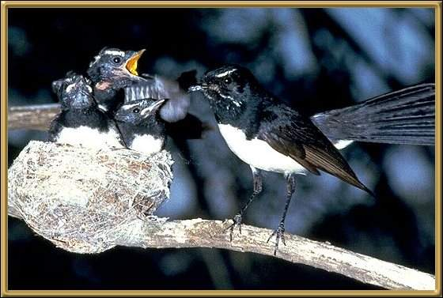

The aboriginals would never tell secrets if one of these black and white fly catchers were nearby, as they believed them to be gossipers! They are a very bright and active bird and one of our favourites.
Photographer: Unknown